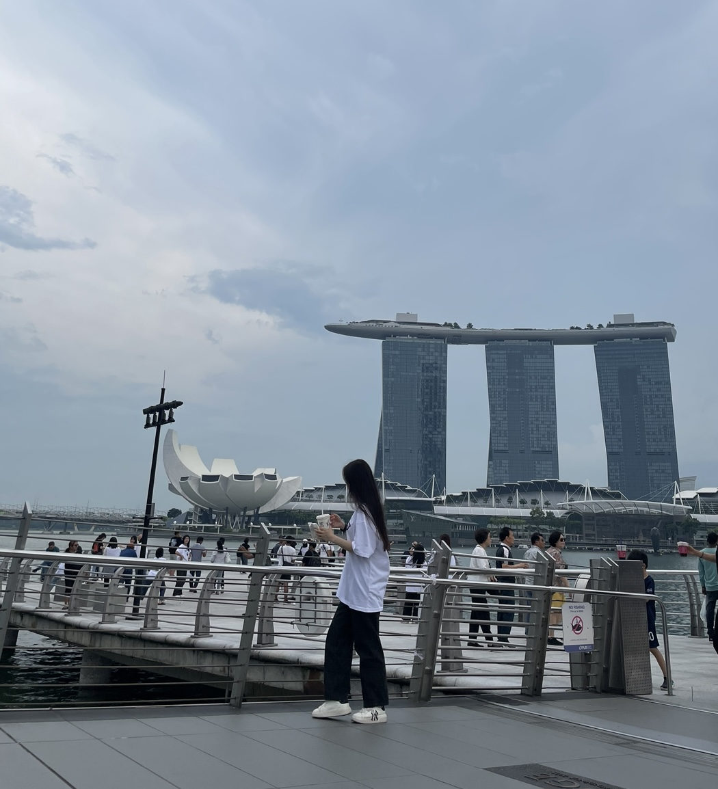
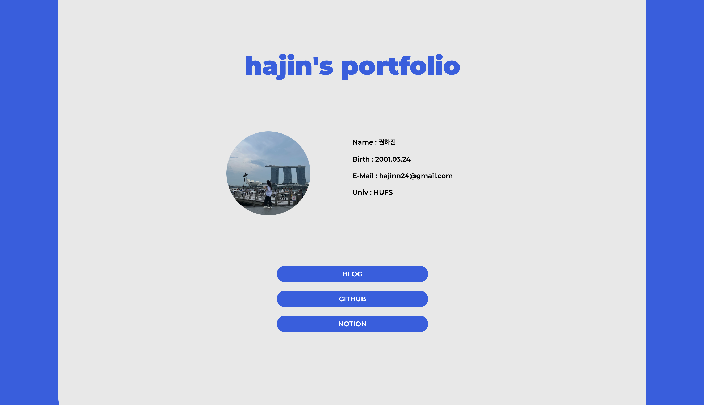
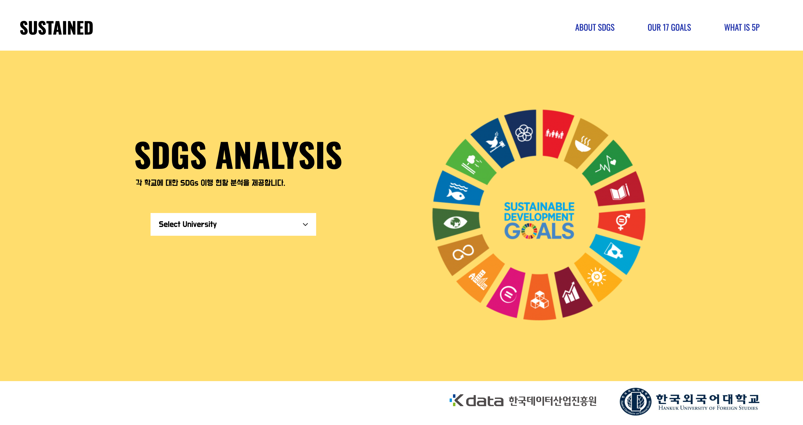
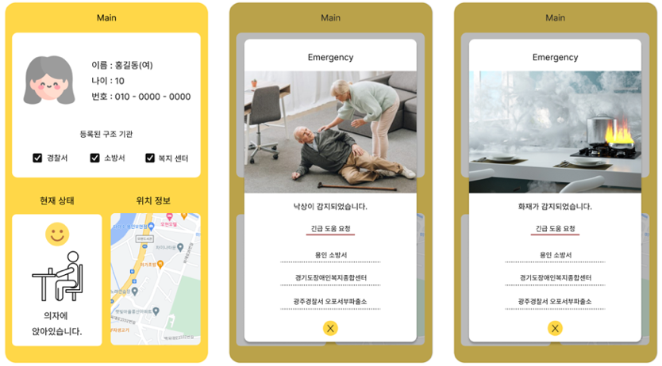

hajin's portfolio

Name : 권하진
Birth : 2001.03.24
Mail : hajinn24@gmail.com
Univ : HUFS
BLOG
GITHUB
NOTION
Projects

포트폴리오 웹사이트
html
css
포트폴리오 웹 사이트를 제작하였다.

대학별 SDGs 이행 현황 분석
html
css
javascript
jquery.js
d3.js
텍스트 분류 모델을 활용하여 국내 대학의 SDGs 이행 정도를 분석하고, 관련 활동 이행을 지원하는 서비스이다.

재가치매환자 홈 케어 서비스
object detection
pose estimation
human activity recognition
fastapi
android
raspberry pi
Computer Vision 기술을 활용하여 재가 치매 환자의 낙상을 판단하고, golden time 내 구조 요청 알림을 전송해주는 어플리케이션이다.